RESEARCH
Drone swarms can accomplish tasks through collaboration that would be impossible for individual drones to achieve alone. They are capable of efficiently and effectively performing complex operations such as searching, detecting, tracking, and defending. Multi-Agent Deep Reinforcement Learning (MADRL) algorithms enable drone swarms to tackle intricate tasks by leveraging each individual's learning experiences. The Centralized Training and Decentralized Execution (CTDE) method has garnered significant attention in recent years, as it mirrors practical scenarios where agents can access information obtained by others, potentially influencing their decisions. However, each agent still operates in a distributed manner based on its derived policies. Our current focus is on two emerging applications: 1) Cooperative sensing and UAV formation control optimization for chemical plume source localization, and 2) Cooperative mobile target tracking optimization in counter-UAV swarms.
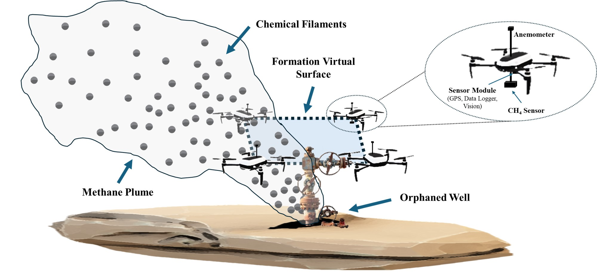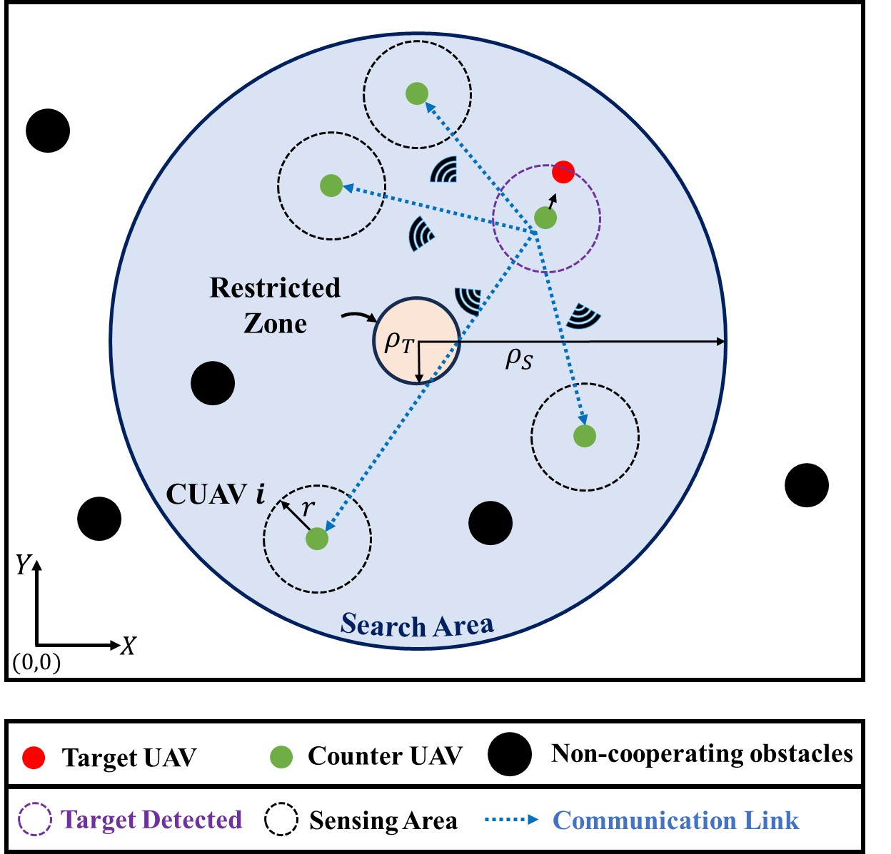Selected Publication
➤ “Counter UAV (CUAV) Swarms: Challenges, Considerations, and Future Directions in UAV Warfare.”
Michelle Sherman, Sihua Shao, Xiang Sun, Jun Zheng.
Accepted to be appear in IEEE Wireless Communications (2024).
➤ “Sustainable and Portable Vertiports Enabling Autonomous Drone Swarm Inspection in the Oil and Gas Industry.”
Fahad Mannan, Logan Moore, Sihua Shao, Xiang Sun and Mostafa Hassanalian.
2024 AIAA SciTech, 2024.
Gathering comprehensive data from various ecosystems and inaccessible areas is crucial for understanding our planet's environmental dynamics and effectively mitigating the impact of environmental disasters. Traditional methods like ground or aerial-based sensors are costly, time-intensive, and limited spatial overview to inaccessible areas. Alternative, remote sensing technologies allow observation and analysis of environmental changes across large areas. However, they provide less detailed information than in-situ sensor-based methods. This project proposes a novel biomimetic swarm sensing system inspired by the dandelion's natural design. The system comprises a massive number of dandelion sensors, each equipped with a pappus-like structure for flight and energy harvesting, a beak-like component for current flow, and an achene-like part integrating both sensing and backscattering communication capabilities. Additionally, the system utilizes UAVs to efficiently drop sensors in a target area, aiming to achieve statistically accurate sensor deployment under wind disturbances.
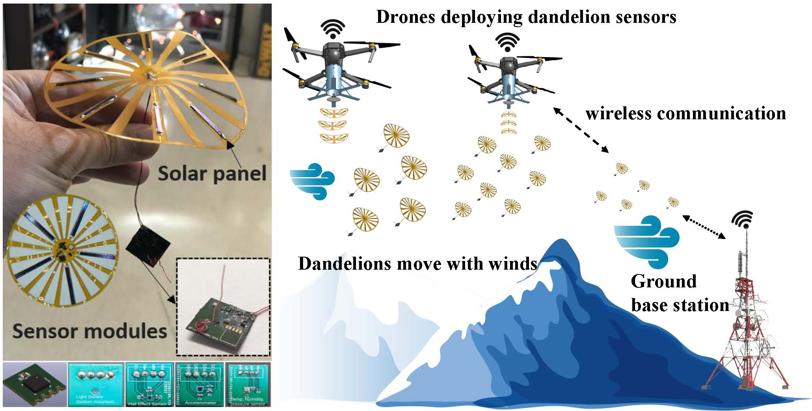 Selected Publication➤ “Dandelion-Inspired Micro Flying Sensors for the Martian Lava Tubes Exploration.”
Jared Cannon, Adrian Salustri, Alex Heusser, Mohammad Moin Khan, Sihua Shao and Mostafa Hassanalian.
2024 AIAA SciTech, 2024.
Wireless communication in underground mines is a particularly challenging issue due to the dynamic and inconsistent nature of mines. The size, shape, and natural materials present in a mine, in addition to the various man-made structures installed, can change drastically from one mine to another. This makes even simple scenarios, such as line-of-sight communication, much more difficult. We aim to develop a robot-deployable wireless communication system that can provide reliable communication for several applications, including real-time video, for post-accident mine rescue missions. We will use a partial mesh network infrastructure (hereafter referred to as simply a “mesh network”) due to its ability to determine its infrastructure and “self-heal” or autonomously reestablish communication paths in the event of a localized node failure. During an underground mining emergency, it may take many hours for mine rescuers to reach the accident zone. To address this, a NIOSH-funded research program is developing a robotic rescue system to improve self-escape capabilities. As part of this program, we develop, prototype, and evaluate an optical backscatter communication link allowing miners to wirelessly report preprogrammed distress states to a rescue robot. The proposed device is mounted on the miner’s suit and sends information by backscattering the beam originating from a robot’s searchlight.
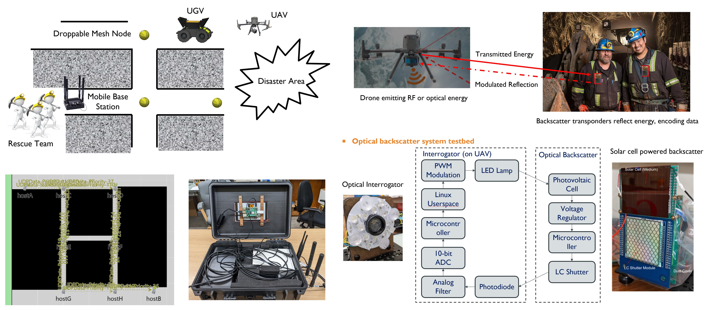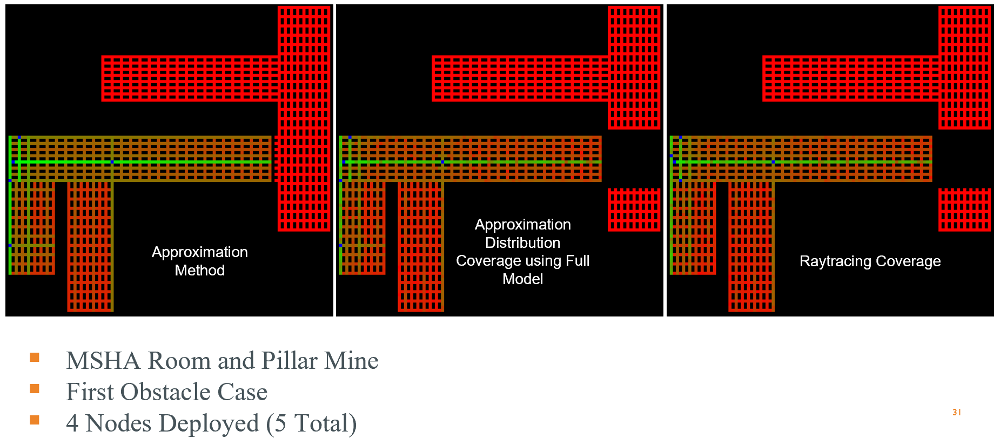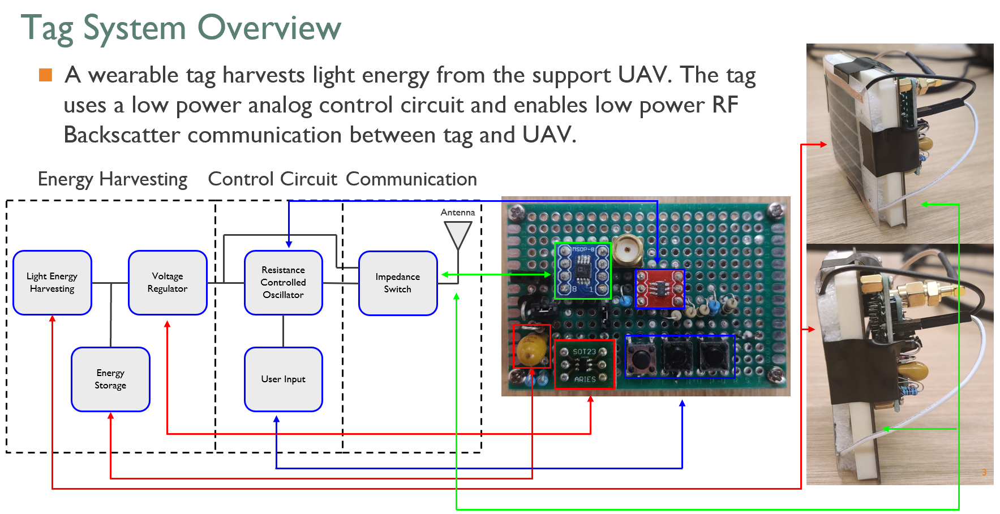Selected Publication
➤ “Organic Photovoltaic Cell-Powered Backscatter Communication System: A Compact Design.”
Adrian Salustri, Alexander Williams, Mathew Salas, Hassan Khaniani, Mostafa Hassanalian, Pedram Roghanchi and Sihua Shao.
2024 IEEE International Conference on Communications (ICC), June 9 - 13, 2024.
➤ “Optimizing fire emergency evacuation routes in underground coal mines: A lightweight network flow approach.”
Simon Lotero, Vasilis Androulakis, Hassan Khaniani, Mostafa Hassanalian, Sihua Shao, Pedram Roghanchi.
ELSEVIER Tunnelling and Underground Space Technology, Vol. 146, 105637 (2024).
➤ “Droppable Nodes Based Wireless Network in Intelligent Mine Rescue Systems.”
Patrick Duane, Sihua Shao and Pedram Roghanchi.
2023 SME Annual Conference & EXPO, 2023.
➤ “Battery-free Optical Backscatter Communication Link for Underground Emergency Response System.”
Adrian Salustri, Sihua Shao and Pedram Roghanchi.
2023 SME Annual Conference & EXPO, 2023.
➤ “Configurations and Applications of Multi-Agent Hybrid Drone-Unmanned Ground Vehicles for Underground Environments: A Review.”
Chris Dinelli, John Racette, Mario Escarcega, Simon Lotero, Jeffrey Gordon, James Montoya, Chase Dunaway, Vasileios Androulakis, Hassan Khaniani, Sihua Shao, Pedram Roghanchi and Mostafa Hassanalian.
MDPI Drones, Vol. 7, No. 2 (2023).
➤ “Research and Design of Precision-Landing Drone in an Underground GPS-Denied Environment.”
John Racette, Chase Dunaway, Mario Escarcega, James Montoya, Chris Dinelli, Vasileios Androulakis, Hassan Khaniani, Sihua Shao, Pedram Roghanchi and Mostafa Hassanalian.
2023 AIAA Aviation Forum, 2023.
➤ “Hybrid UGV and Drone System for Mine Rescue Assistance.”
John Racette, Chris Dinelli, Mario Escarcega, Simon Lotero, James Montoya, Chase Dunaway, Simon Lotero, Hassan Khaniani, Sihua Shao, Pedram Roghanchi and Mostafa Hassanalian.
2023 AIAA Aviation Forum, 2023.
Retroreflective visible light communication and positioning (R-VLCP) is a novel ultra-low-power Internet-of-Things (IoT) technology leveraging indoor light infrastructures. Compared to traditional VLCP, R-VLCP offers several additional favorable features including self-alignment, low-size, weight, and power (SWaP), glaring-free, and sniff-proof. In analogy to RFID, R-VLCP employs a microwatt optical modulator (e.g., LCD shutter) to manipulate the intensity of the reflected light from a corner-cube retroreflector (CCR) to the photodiodes (PDs) mounted on a light source.
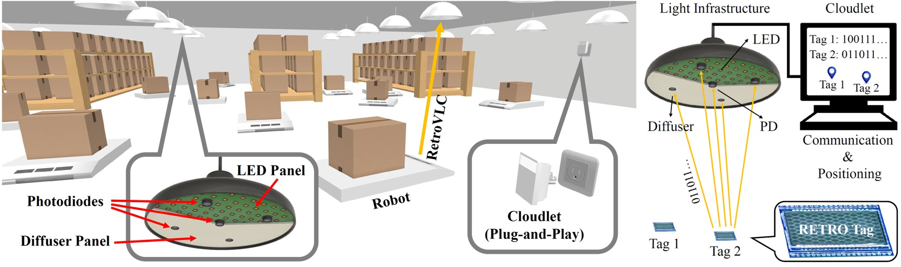Selected Publication
➤ “Retroreflective optical ISAC using OFDM: Channel modeling and performance analysis.”
Yuanxin Cui, Chen Chen, Yueping Cai, Zhihong Zeng, Min Liu, Jia Ye, Sihua Shao, Harald Haas.
Accepted to be appear in OPTICA Optics Letters (2024).
➤ “Downlink-Uplink Symmetry in Mobile Battery-Free Retro-Reflective VLC: Enabling Sensing-Assisted Communications.”
Sihua Shao, Adrian Salustri, Alexander Heusser, Hassan Khaniani, Mostafa Hassanalian and Pedram Roghanchi.
2024 IEEE International Conference on Communications (ICC) Workshop on ETASN, June 9 - 13, 2024.
➤ “R-VLCP: Channel Modeling and Simulation in Retroreflective Visible Light Communication and Positioning Systems.”
Sihua Shao, Adrian Salustri, Abdallah Khreishahl, Chenren Xu and Shuai Ma.
Accepted to appear in IEEE Internet of Things Journal (2023).
➤ “Securing Smart Grid Enabled Home Area Networks with Retro-reflective Visible Light Communication.”
Matthew Salas, Sihua Shao, Adrian Salustri, Zachary Schroeck and Jun Zheng.
Accepted to appear in MDPI Sensors, Special Issue: Recent Advances in Visible Light Communication and Positioning Systems (2023).
➤ “Machine Learning Regression-based RETRO-VLP for Real-time and Stabilized Indoor Positioning.”
Ali Alenezi, Mahmoud Nazzal, Ahmed Sawalmeh, Abdallah Khreishah, Sihua Shao and Muhannad Almutairy.
Accepted to appear in Springer Cluster Computing (2022).
➤ “Harnessing Retroreflective Transportation Infrastructure for Intelligent Vehicle Positioning.”
Sihua Shao and Abdallah Khreishah.
Accepted to appear in ELSEVIER Vehicular Communications (2020).
➤ “PassiveRETRO:Enabling Completely Passive Visible Light Localization for IoT Applications.”
Sihua Shao, Abdallah Khreishah and Juan Paez.
Proceedings of 2019 IEEE International Conference on Computer Communications (INFOCOM), April 29 - May 2, 2019, pp. 1540-1548.
➤ “Enabling Real-time Indoor Tracking of IoT Devices Through Visible Light Retroreflection.”
Sihua Shao, Abdallah Khreishah and Issa Khalil.
IEEE Transactions on Mobile Computing, DOI: 10.1109/TMC.2019.2901665 (2019).
➤“RETRO: Retroreflector based Visible Light Indoor Localization for Real-time Tracking of IoT Devices.”
Sihua Shao, Abdallah Khreishah, Issa Khalil.
Proceedings of 2018 IEEE International Conference on Computer Communications (INFOCOM), April 15-19, 2018, pp. 1025-1033.
➤ “Pixelated VLC- Backscattering for Self-charging Indoor IoT Devices.”
Sihua Shao, Abdallah Khreishah, Hany Elgala.
IEEE Photonics Technology Letters, Vol. 29, No.2 (2017).
In urban environments, tall buildings or structures can pose limits on the direct channel link between a base station (BS) and an Internet-of-Thing device (IoTD) for wireless communication. Unmanned aerial vehicles (UAVs) with a mounted reconfigurable intelligent surface (RIS), denoted as UAV-RIS, have been introduced in recent works to enhance the system throughput capacity by acting as a relay node between the BS and the IoTDs in wireless access networks. Uncoordinated UAVs or RIS phase shift elements will make unnecessary adjustments that can significantly impact the signal transmission to IoTDs in the area. To optimize the network performance, two model-free deep reinforcement learning (DRL) approaches -- Off-Policy Deep Q-Network (DQN) and On-Policy Proximal Policy Optimization (PPO) -- are developed to solve the problem by jointly optimizing the RIS phase shift, the location of the UAV-RIS, and the IoTD transmission scheduling for large-scale IoT wireless networks. Analysis of loss functions and extensive simulations is performed to compare the stability and convergence performance of the two algorithms.
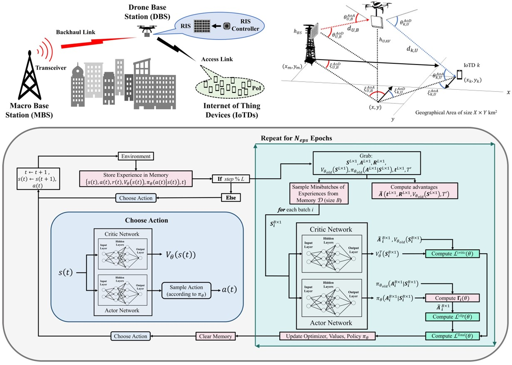 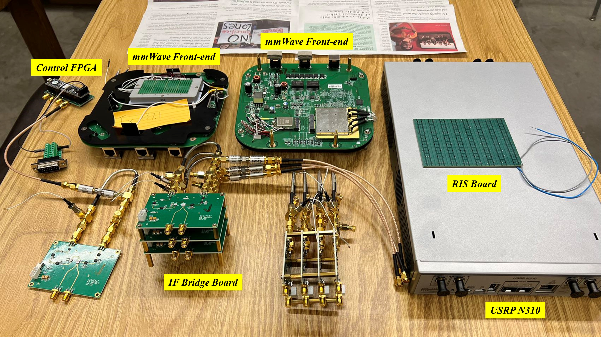Selected Publication
➤ “Optimizing AoI in UAV-RIS Assisted IoT Networks: Off Policy vs. On Policy.”
Michelle Sherman, Sihua Shao, Xiang Sun and Jun Zheng.
Accepted to appear in IEEE Internet of Things Journal (2023).
➤ “Backhaul-Aware Drone Base Station Placement and Resource Management for FSO Based Drone Assisted Mobile Networks.”
Liangkun Yu, Xiang Sun, Sihua Shao, Yougan Chen and Rana Albelaihi.
Accepted to appear in IEEE Transactions on Network Science and Engineering (2022).
➤ “Low Cost ATP System Design for Free Space Optics based Drone Assisted Wireless Networks.”
Xiang Sun, Tianrun Zhang, Sihua Shao, Bryan Tice, Paul Tice, Sudharman Jayaweer.
2022 IEEE Globecom Workshop on Cellular UAV and Satellite Communications, December 4 - 8, 2022.
➤ “UAV Assisted Cellular Networks With Renewable Energy Charging Infrastructure: A Reinforcement Learning Approach.”
Michelle Sherman, Sihua Shao, Xiang Sun, Jun Zheng.
Proceedings of 2021 IEEE Military Communications Conference (MILCOM), November 29 - December 2, 2021.
In addition to the exploration of more spectrum at high-frequency bands, next-generation wireless networks will witness an intelligent convergence of radio frequency (RF) and non-RF links such as optical and visible light communication. Optical attocell (OAC) networks provide an additional layer to RF-based wireless networks with Gb/s data transmission rate and centimeter-level location accuracy. However, the directionality, line-of-sight constraints, as well as strong sensitivity to the location and orientation of user terminals challenge the stringent requirements for throughput and latency.
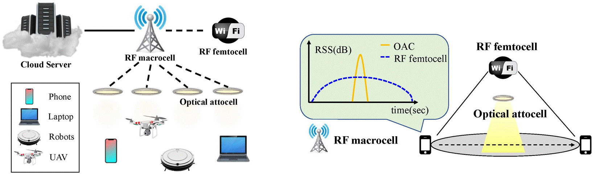 Selected Publication➤ “Self-optimizing Data Offloading in Mobile Heterogeneous Radio-Optical Networks: A Deep Reinforcement Learning Approach.”
Sihua Shao, Mahmoud Nazzal, Abdallah Khreishah and Moussa Ayyash.
Accepted to appear in IEEE Network (2022).
➤ “Optimal Discrete Constellation Inputs for Aggregated LiFi-WiFi Networks.”
Shuai Ma, Fan Zhang, Songtao Li, Hang Li, Ruixin Yang, Sihua Shao, Jiaheng Wang and Shiyin Li.
Accepted to appear in IEEE Transactions on Wireless Communications (2021).
➤ “Optimizing Handover Parameters by Q-learning for Heterogeneous Radio-Optical Networks.”
Sihua Shao, Guanxiong Liu, Abdallah Khreishah, Moussa Ayyash, Hany Elgala, Thomas D.C. Little and Michael B.Rahaim.
Accepted to appear in IEEE Photonics Journal (2019).
➤ “Design and Implementation of a Hybrid RF-VLC System with Bandwidth Aggregation.”
Zhouchi Li, Sihua Shao, Abdallah Khreishah, Moussa Ayyash, Iman Abdalla, Hany Elgala, Michael Rahaim, Thomas DC Little.
Proceedings of IEEE International Wireless Communication and Mobile Computing Conference (IWCMC), June 25-29, 2018, pp. 194-200.
➤ “Delay Analysis of Unsaturated Heterogeneous Omnidirectional-Directional Small Cell Wireless Networks: The Case of RF-VLC Coexistence.”
Sihua Shao, Abdallah Khreishah.
IEEE Transactions on Wireless Communications, Vol. 15, No. 12 (2016).
➤ “Coexistence of WiFi and LiFi towards 5G: Concepts, Opportunities, and Challenges.”
Moussa Ayyash, Hany Elgala, Abdallah Khreishah, Volker Jungnickel, Thomas Little, Sihua Shao, Michael Rahaim and Dominic Schulz.
IEEE Communication Magazine, Vol. 54, No. 2 (2016).
➤ “Design and Analysis of a Visible-Light- Communication Enhanced WiFi System.” (DEMO ON YOUTUBE)
Sihua Shao, Abdallah Khreishah, Moussa Ayyash, Michael B. Rahaim, Hany Elgala, Volker Jungnickel, Dominic Schulz, Thomas D.C. Little, Jonas Hilt and Ronald Freund.
IEEE/OSA Journal of Optical Communications and Networking (JOCN), Vol.7, No. 10 (2015).
➤ “An Indoor Hybrid WiFi-VLC Internet Access System.”(DEMO ON YOUTUBE)
Sihua Shao, Abdallah Khreishah, Michael B. Rahaim, Hany Elgala, Moussa Ayyash, Thomas D.C. Little and Jie Wu.
Proceedings of 2014 IEEE 11th International Conference on Mobile Ad Hoc and Sensor Systems (MASS), Oct. 28-30, 2014, pp. 569-574.
Demands for broadband wireless access services are expected to outstrip the spectrum capacity in the near-term "spectrum crunch". Deploying additional femtocells to address this challenge is cost-inefficient due to the backhaul challenge and the exorbitant system maintenance. According to an Alcatel–Lucent report, most mobile Internet access traffic happens indoors. Leveraging power line communication and the available indoor infrastructure, visible light communication (VLC) can be utilized with a small one-time cost. VLC also facilitates the great advantage of being able to jointly perform illumination and communications, and little extra power beyond illumination is required to empower communications, thus rendering wireless access with small power consumption.
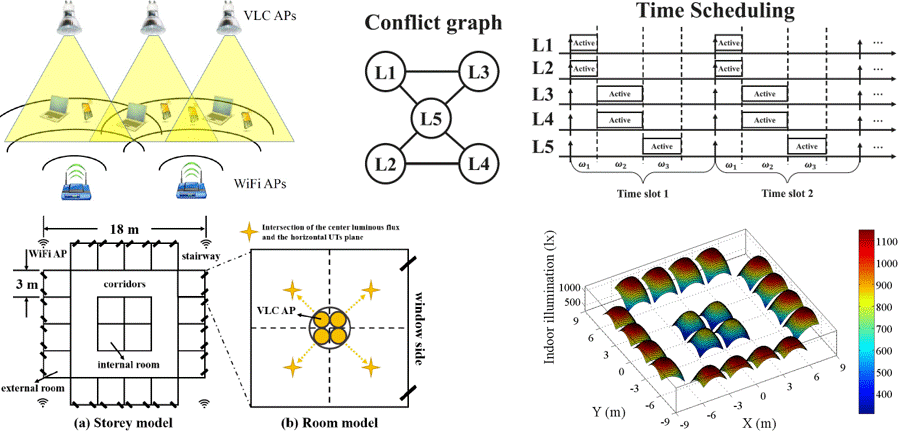 Selected Publication➤ “A Hybrid RF-VLC System for Energy Efficient Wireless Access.”
Abdallah Khreishah, Sihua Shao, Ammar Gharaibeh, Moussa Ayyash, Hany Elgala and Nirwan Ansari.
IEEE Transactions on Green Communications and Networking,Vol. 2, No. 4 (2018).
➤ “Joint Link Scheduling and Brightness Control for Greening VLC-based Indoor Access Networks.”
Sihua Shao, Abdallah Khreishah and Issa Khalil.
IEEE/OSA Journal of Optical Communications and Networking (JOCN), Vol. 8, No. 3 (2016).
The millimeter-wave (mm-Wave) or 60 GHz technology emerges as an attractive candidate for indoor wireless access in the 5G architecture. Different from 2.4/5 GHz, high signal attenuation requires mm-Wave antenna utilizing directional transmission to enhance beamforming gain. Consequently, time-consuming beamforming training process between mm-Wave nodes significantly increases communication overhead, especially when the environment is crowded since the nodes perform training process in a contention and backoff manner.
 Selected Publication
Selected Publication➤ “Two-dimensional Reduction of Beam Training Overhead in Crowded 802.11ad based Networks.”
Sihua Shao, Hanbin Zhang, Dimitrios Koutsonikolas, Abdallah Khreishah.
Workshop on mmSys: Millimeter-Wave Networked Systems, co-located with IEEE INFOCOM 2018, April 16, 2018 pp.680-685.